Tutorial
The main goal of this tutorial is to show the main capabilities of the visualization instrument.
The simple visualization can be made with function main. (this part will be supplemented)
Solids properties
We will analyze which basic properties solids have using box solid.
Basic properties:
1. opacity — It is set in float. It takes on values from 0 to 1, which represent percents of solid opacity. It's initial value is 1.
2. color — It can be specified as Int, String, or as three Ubytes, which represent color in rgb. Elementally, the solid will have green color.
3. rotation — it's the point, which sets rotations along axes. Initially, the value is Point3D(0, 0, 0). Changing x coordinate of the point, you make pivot around x axis. The same for other coordinates: changing y — pivot around y axis, changing z — pivot around z axis.
4. position, which is given by values x, y, z. Initial values are x = 0, y = 0, z = 0. The coordinate system is Cartesian. It's elemental position is this — vertical y axis and horizontal Oxz plane.
Let's see how properties are set in solids.
The small box will have elemental values of properties. If you don't set properties, it will have the same position, color, rotation, and opacity values.
You can see that box take four values. Later, we will discuss what they do in more detail. Now, it does not really matter.
The big box will have properties with custom values.
Here is the function main with both boxes.
There is plenty of other properties, especially those, which you can create by yourself. Here we mention just a small part.
Basic Solids
Now, let's see which solids can be visualized:
1) PolyLine
It's scarcely a solid, but it can be visualized, so we mention it.
polyline build lines, obviously. Let's take a look at it's work.
polyline requires two values — points, and name:
* points is a vararg with Point3D type. It takes pairs of points, which you want to connect.
* name is an identifier of any solid; but in this case, it is an identifier of polyline.
It's type is String. This value can be required by any solid;
you can set it, you can not to set it, but without you won't be able to control solid, since it won't be inherited.
This is an example of polyline with other solid box:
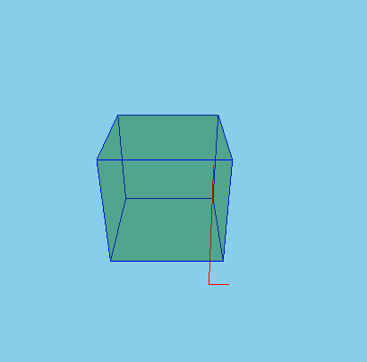 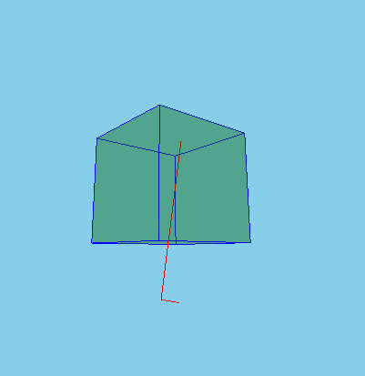
2) Box
First thing which has to be mentioned is that box takes four values: box(x, y, z, name)
* x — x-axis length of the box
* y — y-axis length of the box
* z — z-axis length of the box
These values have Float type.
x, y, and z are necessary values, which cannot be ignored. You have to set them.
name—box'es identifier. You've already met it.
Let's create just usual box with equal ribs.
Now, let's make box with bigger y value.
y-axis differs from other ribs.
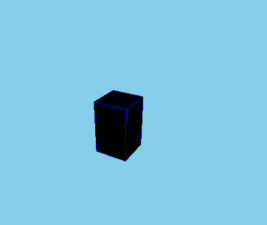
For a final trial, let's create a box with a bigger x value.
x-axis rib is bigger than other ribs.
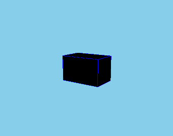
3) Sphere
It takes in two values: radius, and name.
We bring you to mind that name is a general value for all solids, so do not wonder, since all solids need their own identifier.
As for radius, it has Float type, and, as you can guess, it sets the radius of the sphere which will be created.
4) Hexagon
It is solid which has six edges. It is set by eight values: node1,..., node8. They all have Point3D type, so they are just points, vertices.
Six edges are these:
1) Edge with vertices node1, node4, node3, node2
2) Edge with vertices node1, node2, node6, node5
3) Edge with vertices node2, node3, node7, node6
4) Edge with vertices node4, node8, node7, node3
5) Edge with vertices node1, node5, node8, node4
6) Edge with vertices node8, node5, node6, node7
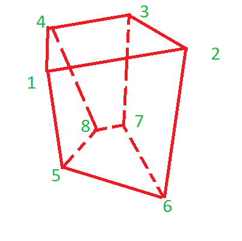
As the hexagon takes in specific points, we understand that this solid cannot be moved, it is fixed in space, and it can't make pivots.
Let's make classic parallelepiped.
Now, let's make a custom hexagon.
kotlin
hexagon(
Point3D(5, 30, 5),
Point3D(24, 30, 8),
Point3D(20, 30, -10),
Point3D(5, 30, -7),
Point3D(8, 16, 0),
Point3D(12, 16, 0),
Point3D(10, 16, -5),
Point3D(6.5, 12, -3),
name = "custom_hexagon"
) {
color("brown")
}
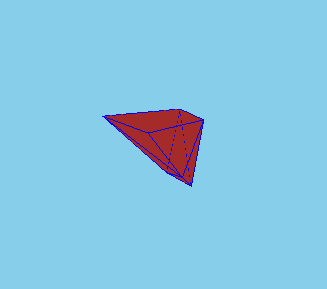
3) Cone
It takes in six values: bottomRadius, height, upperRadius, startAngle, angle, and name.
Obviously, bottomRadius is responsible for the radius of a bottom base, and height sets the height of a cone along the z-axis.
As it takes such values as upperRadius, startAngle, angle, cone can build not only usual cones, but also cone segments. Initially, upperRadius will have 0.0 value, startAngle — 0f, angle — PI2, so if you don't set them, you'll get just a simple cone.
Setting upperRadius, you make a frustum cone, since it sets a radius of the upper base of a cone. Set startAngle, and angle let to cut off segments by planes perpendicular to the base. startAngle — an angle, starting with which segment will be left, angle — an angle of cone, which will be set from startAngle.
Let's build a classic cone:
Now, we need to make a try to build a cone segment:
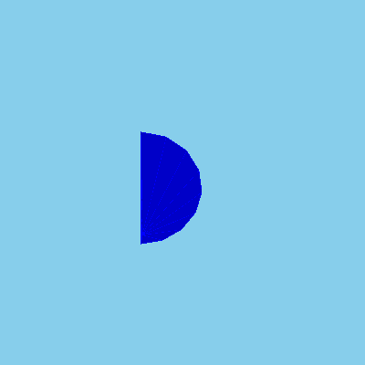 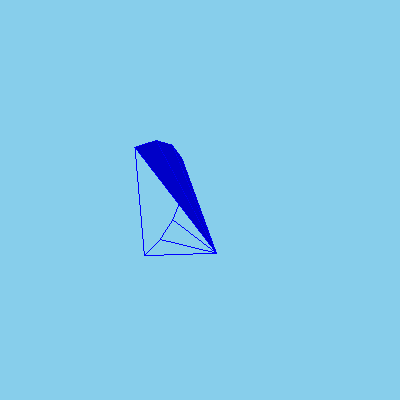Finally, the segment of frustum cone is left for a try:
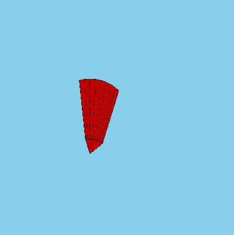4) Cone Surface
This solid is set by seven values:bottomOuterRadius, bottomInnerRadius, height, topOuterRadius, topInnerRadius, startAngle, and angle.
In addition to height, startAngle, and angle, which work as they work in cone, there are some new values.
bottomOuterRadius, and bottomInnerRadius set properties of the bottom circle, topOuterRadius, topInnerRadius — of the upper circle. They have no initial value, so that means they have to be set.
Generally, cone, and coneSurface buildings work in the same way, it's possible to make coneSurface's fragments as in cone
Let's build usual cone surface with almost all properties set:
5) Cylinder
This solid is set by radius, and height. As you can see by accepting values, there's no option of building fragments of cylinders.
Here's a demonstration of a cylinder:
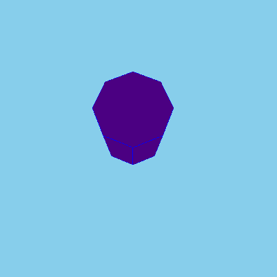 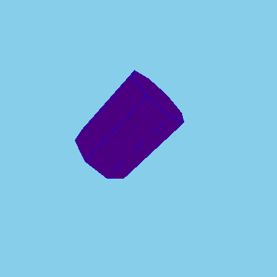6) Tube
tube takes in radius, height, innerRadius, startAngle, angle, and name. All values are familiar from cone, and coneSurface solids.
Here is an example of classic tube:
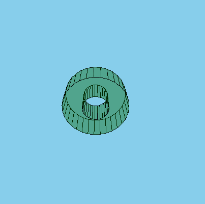This is an example of tube fragment:
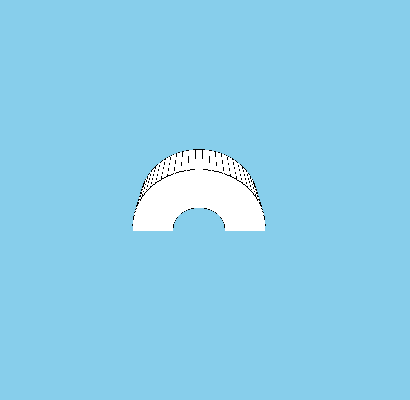7) Extruded
extruded is set by two values: shape, and layer.
* shape is a value of List<Point2D> type. It's just a list of all points of the solid. shape has to consist of not less than two points!
* layer is MutableList types variable. (here is a sentence with a description of the work of this function). The amount of layer-s has to be more than one